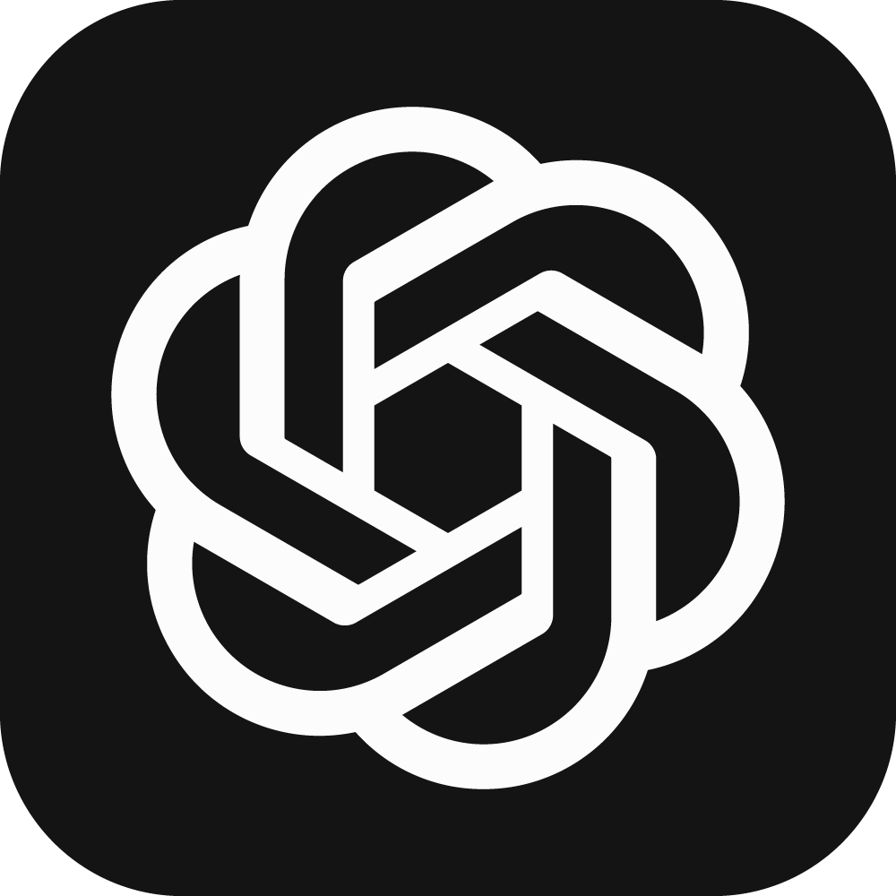

Project 1
Brief description of the project. Explain what it does or how it was made.
Java
JavaFX
MYSQL
Software Engineer (UG) | QA | UI/UX
👋 A Software Engineering student 🚀 with a passion for building efficient, user-friendly applications.
With 1+ years of experience as an ISTQB-certified Software QA, ensuring quality in every project is a top priority ✅.
Beyond coding and testing, there's a love for Photography 📷 capturing moments that tell stories through the lens.
Always exploring new technologies 💡, pushing creative boundaries, and embracing continuous learning.
In free time, it's all about movies 🎬, experimenting with tech 💻, and discovering new experiences 🌍.
Always up for a challenge and excited to innovate!


Brief description of the project. Explain what it does or how it was made.
Java
JavaFX
MYSQL
Brief description of the project. Explain what it does or how it was made.
Selenium
JUnit
Brief description of the project. Explain what it does or how it was made.
Lightroom
Photoshop
Brief description of the project. Explain what it does or how it was made.
Python
Django

